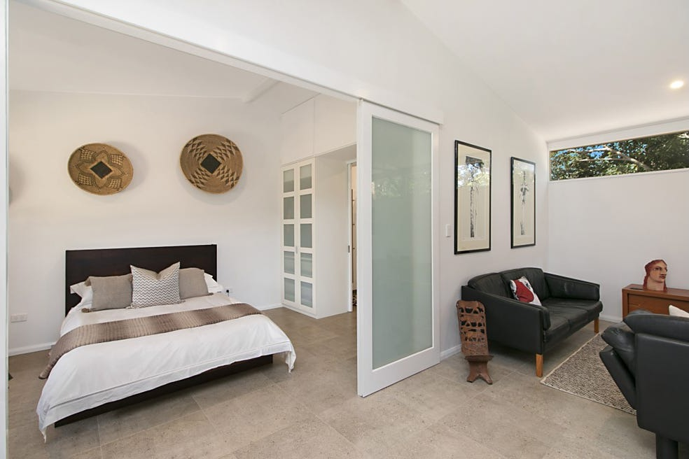
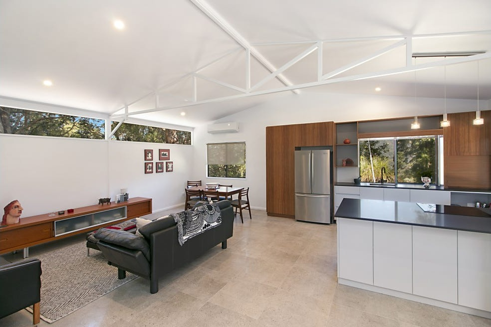
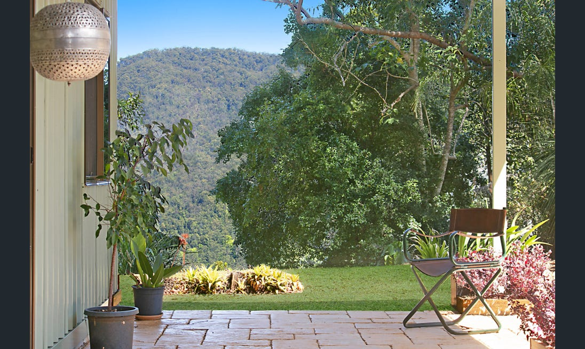
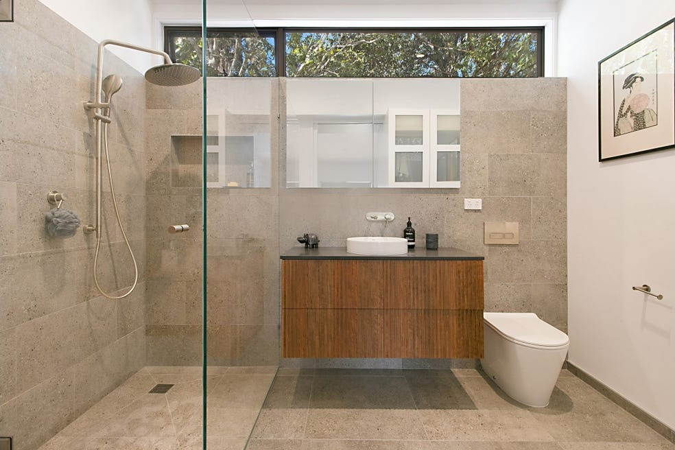
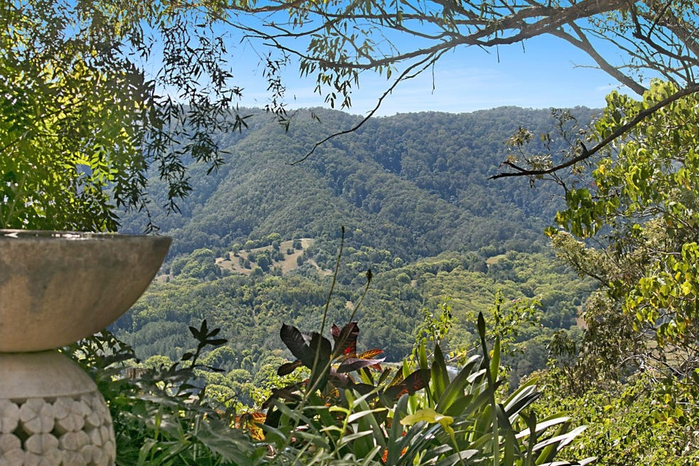
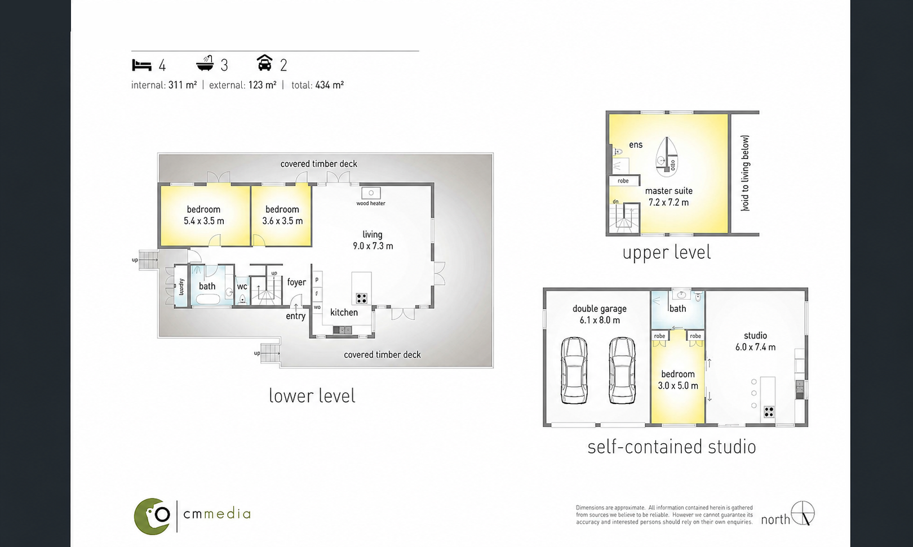

Serra Luma
The Estate
Architecture, land, water and possibility — across 134 acres.
Overview
A rare canvas of land, light and possibility.
Set high on a private ridge-line above the Tweed Valley, Serra Luma spans 134 acres of native forest, open pasture, curated gardens and creek frontage — a landscape with the scale, privacy and beauty to become whatever its next custodian imagines.

- 134 acres of pristine hinterland landscape
- Breathtaking panoramic views in every direction
- Spectacular sunrises and sunsets from the ridge-line
- Architect-designed three-bedroom Philip Pratt “Bush Pavilion” residence
- Separate self-contained studio accommodation
- Approximately 500 metres of creek frontage
- Beautifully curated gardens and outdoor spaces
- Native forest, open pasture and established walking trails
- Abundant birdlife and native wildlife
- Extensive shed and storage facilities for equipment, vehicles and recreation
- Significant rainwater collection and storage infrastructure
- Elevated private ridge-line position with exceptional privacy
- Approximately 1km sealed driveway leading to the hilltop residence
- Just 5 minutes from the village of Uki
- Approximately 50 minutes to Byron Bay
- Approximately 50 minutes to Gold Coast Airport

The Residence
Timeless Australian architecture.
Designed by acclaimed Bush Pavilion architect Philip Pratt, the residence is crafted from Australian hardwoods and positioned to embrace the surrounding landscape.
Every detail maximises light, airflow and connection to nature — a home that feels both grounded and elevated. Warm yet sophisticated. Private yet open.



The Studio
A second sanctuary, entirely its own.
Privately positioned from the main residence, the guest studio offers exceptional flexibility — for guests, family, creative work, accommodation income or retreat operations.
It expands the possibilities of Serra Luma well beyond those of a traditional residence.




The Land
One hundred and thirty-four living acres.
Native forest and towering Flooded Gums give way to open pasture, cultivated gardens and the soft edge of Chowan Creek — 500 metres of frontage, with views lifting to Wollumbin.
- Approx. 134 acres / 54.23 hectares
- 500m frontage to Chowan Creek
- 60,000L rainwater storage & solar power
- Established internal roads



Retreat Potential
The groundwork has already begun.
Approximately 400 metres from the residence lies a secluded lower plateau, already accessed via established internal roads. Surrounded by native forest and complete privacy, it presents an extraordinary opportunity for future development — subject to approvals.
Wellness retreat · Eco accommodation · Meditation pavilion · Creative residency · Nature-based tourism · Private event space
The vision remains yours to create.
Floor Plan

Request the full story of Serra Luma.
Enquire to receive the Information Memorandum and further information on the opportunity within.
Private inspections by appointment only. Exact property address released to qualified buyers and agents upon enquiry.